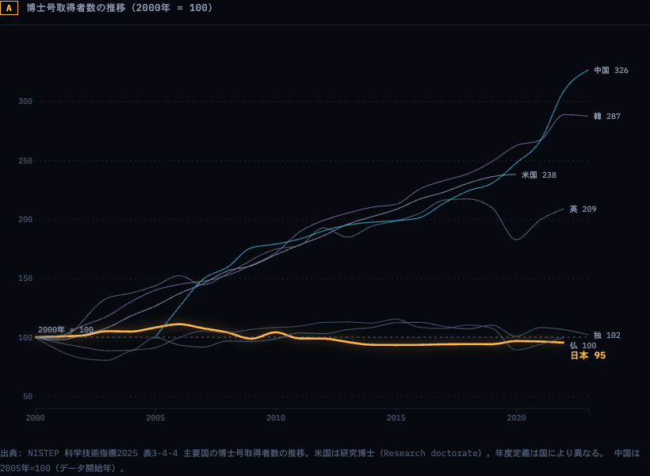
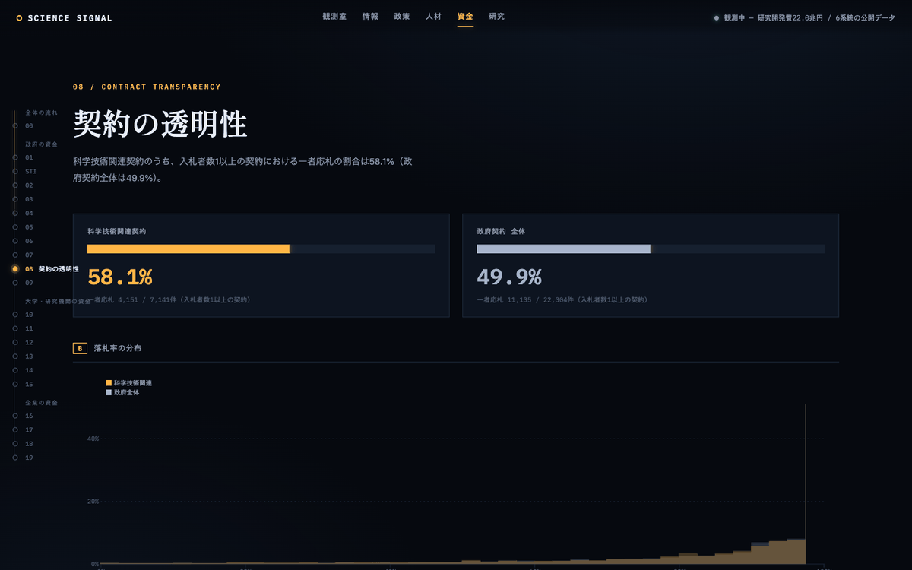
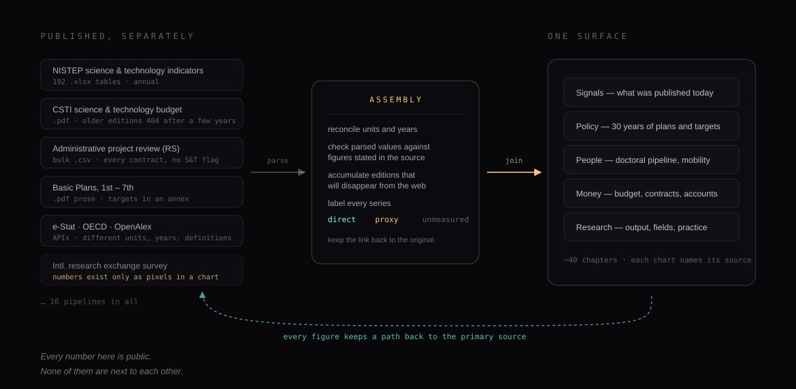

The data is not missing. It is unassembled
If you want to know how much Japan spends on research, how many doctorates it produces, where the money goes after it leaves a ministry, or whether the targets in the national science plan are being met, the answer is already public. It is in the 192 Excel tables NISTEP publishes each year. It is in the Cabinet Office’s science and technology budget PDFs. It is in the bulk CSV dump from the administrative project review system, which lists every government contract, including the losing bid counts. It is in e-Stat, in OECD’s SDMX endpoints, in OpenAlex.
What does not exist is any place where those numbers sit next to each other. Each source is published on its own schedule, in its own format, under its own definitions, by an organization with no particular reason to make it join cleanly with anyone else’s. So the practical situation is that a country which measures its research system in extraordinary detail cannot, in any ordinary sense, look at it.
This has a cost that never shows up on anyone’s budget. Every university research administrator who wants to know where funding is heading rebuilds a fragment of the same picture, by hand, from the same ministry pages. Every journalist starts over. Every policy researcher starts over. The work is duplicated across hundreds of desks and thrown away each time, because nobody’s reconstruction is durable enough to hand to anyone else.
SCIENCE SIGNAL is our attempt at doing that assembly once, in the open, and keeping it running.
Nineteen targets, eight of them observable
Japan’s 7th Science, Technology and Innovation Basic Plan runs from 2026 to 2030 and sets 19 numerical indicators: research strength, industrial growth, investment. Each has a target. It is exactly the kind of thing a dashboard should be able to render.
We tried to attach every one of the 19 to a public statistical series that could actually be tracked over time. Eight could be measured directly — a primary source exists whose definition matches the indicator. Ten could only be approximated, by a series that measures something adjacent under a different definition: full-time-equivalent research hours surveyed for a broader population than the indicator targets, an AI-paper ranking computed from a different corpus with a different counting method. And one could not be observed at all.
That last one asks for the number of local governments running interoperable, data-linked smart city services, with a target of 180. Selection lists are published year by year, but no cumulative machine-readable series exists that corresponds to the target. So a national plan carries a numerical goal whose progress cannot be read from public statistics by anyone outside the process. We show it as unmeasured, because that is what it is.
We want to be careful about what this does and does not mean. It is not evidence that the plan is failing, and each of the ten proxies is a reasonable stand-in that a specialist would accept with the caveat attached. It is evidence about the measurement system: setting a target and publishing a series that tracks it are separate acts, and in Japan the second one lags the first badly enough that roughly half of a national plan’s indicators cannot be independently followed without approximation.
What turns up once the numbers are side by side
None of what follows is a discovery in the sense of new data. Each figure was already published. They are simply things nobody had put in the same frame.
Index every major country’s doctorate output to its own year-2000 level and Japan is the only one that ends up below where it started: 95 against China’s 326, South Korea’s 287, the United States’ 238. In absolute terms, South Korea awarded 17,673 doctorates in 2023 against Japan’s 15,345 in 2022, with well under half the population. Meanwhile Japan spends 3.62% of GDP on R&D, among the highest ratios in the world. A country can hold its research spending near the top of the table and quietly stop producing researchers, and the two facts live in different publications, so the tension is never forced.

A second example, from the contracts data. The administrative project review system publishes bidder counts, so a single-bidder rate is computable. Among government contracts eligible for competition in FY2024, 49.9% drew exactly one bidder. Among the science and technology subset, 58.1% did — 4,151 out of 7,141. Research procurement is less competitive than government procurement in general. That figure has never, as far as we can tell, been reported, because computing it means joining the contract dump against the Cabinet Office’s list of science and technology projects, and no published dataset does that join for you.

We would rather these findings be checked than believed. Both are reproducible from the pipelines in the repository, and both carry the definitional caveats that make them narrower than a headline would suggest — the contract figure covers only contracts with at least one recorded bidder, and the doctorate series uses each country’s own academic-year conventions.
Assembly is the whole job, and it is uglier than it sounds
Sixteen pipelines feed the site. Some are pleasant: OECD and OpenAlex have real APIs. Most are not. The Cabinet Office’s budget PDFs stop resolving a few years after publication, so the system accumulates each edition under a fiscal-year key and keeps its own copy — the archive has to be built as a side effect, because the primary source is not one. Several indicators are transcribed by hand from documents where the numbers are not text at all. The Ministry of Education’s international research exchange survey publishes a 32-year time series that exists only as pixels inside a chart image; we transcribed it independently more than once and cross-checked the result against year-on-year changes stated in the accompanying reports, and the site labels it as a manual transcription so a reader can weigh it accordingly.
Parsed values are verified against figures stated in prose in the same source before they are accepted, which is how you catch a column misalignment that would otherwise become a confident chart. Series that update annually run manually and are documented as such; only the daily policy feed and the weekly indicator refresh run unattended. This is not elegant, and we are not going to pretend it is. It is what the material demands.

Don’t draw what you didn’t measure
A chart is more persuasive than the table behind it, which means a chart has to be more honest than the table behind it. That obligation gets heavier the better the visualization looks, and this one is designed to look good.
So the site runs on one editorial rule, and it is the site’s tagline: we do not draw what we have not measured. In practice that means an approximation is labelled an approximation with the definitional gap written out beside it, not silently promoted to a measurement. An unmeasured indicator is shown as unmeasured rather than dropped from the grid — the absence is information, and deleting it would make the plan look more trackable than it is. Every chart carries its source, its survey year, and its counting method. Every page ends with a provenance ledger listing which primary sources it draws on and whether each connection is currently live. Where a diagram shows relationships rather than quantities, it says so, so that nobody reads the width of a line as a number of yen.
The rule costs something. It rules out the seamless dashboard where every tile is populated and confident, and it means our most striking claims come wrapped in qualifications. We think that is the correct trade for a site about a national research system, where the failure mode of over-confident visualization is that someone cites it.
What it isn’t
It is not an official source, and it is not a substitute for one. Every figure links back to the ministry, agency, or database it came from, and where they disagree with us, they are right and we have a bug.
It is not an evaluation. The indicators exist to track national policy, and applying them to individual researchers or institutions is a misuse the plan itself warns against. It is not complete: it covers what we could source and verify, which leaves out large parts of the system — regional research capacity, most of the private sector’s internal picture, anything that is genuinely not published.
And it is not neutral about its own gaps. When a series stops, or a definition changes mid-stream, or a number had to be read off a picture, the site says so in the place where you would otherwise have trusted it.
Why we’re running this
Our previous two notes were about mechanisms of science that could be different from how they are: publishing the research trajectory instead of the reconstructed summary, and reviewing a paper without issuing a verdict. This one is about the layer underneath. Metascience — the study of how research actually works — needs its object to be observable. You cannot ask whether a funding instrument produced better science, or whether a doctoral policy worked, in a system whose own numbers have never been joined.
The way a country accounts for its research is a mechanism too, and like the others it was shaped by what was expensive when it was built. Publishing a PDF was what a ministry could afford in 2003; joining a hundred of them was not something anyone could do cheaply, so nobody was assigned to. That constraint has now moved. The assembly that used to require a standing institution is a few thousand lines of Python and a scheduled job, which is a small enough thing that a one-person company can simply do it and leave the result running.
What we do not know is whether an observable national research system changes anything. Perhaps the people who most need this already have their own spreadsheets. Perhaps making the single-bidder rate visible does nothing at all. That is what the next year is for: the site is live, the code is open, and we would like to know where it is wrong.
Look at it — and if you find a number we have misread, a definition we have flattened, or a source we should be pulling and are not, tell us: shiro.takagi@unktok.com, or an issue on the repository.